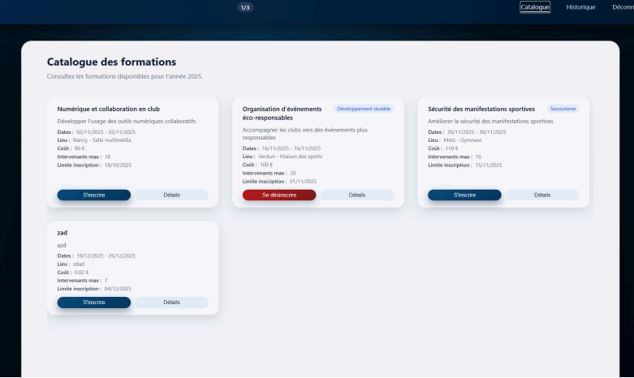

Site Dynamique
Application SaaS Admin
Conception et développement d'un panneau d'administration type SaaS complet chez All Info Service. Gestion multi-utilisateurs, dashboard et interface sécurisée.
Laravel
TALL Stack
MySQL
Livewire